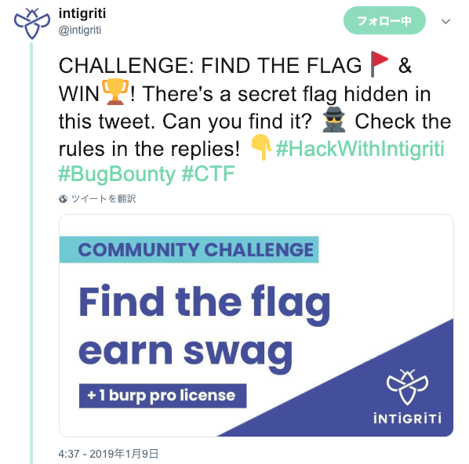
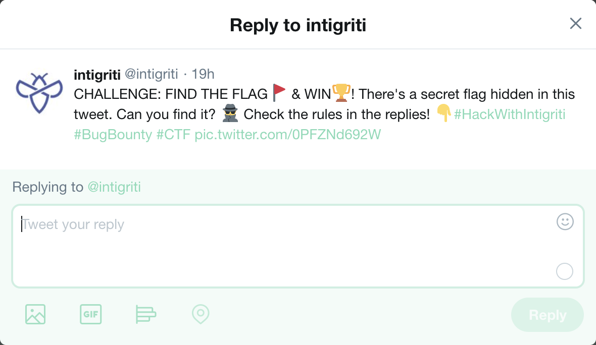
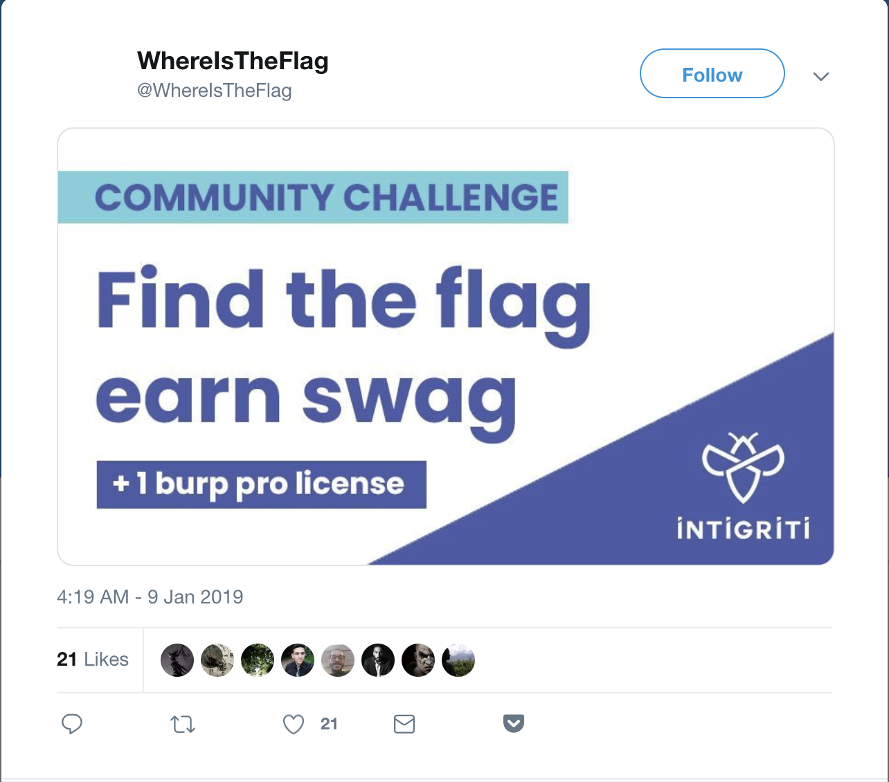
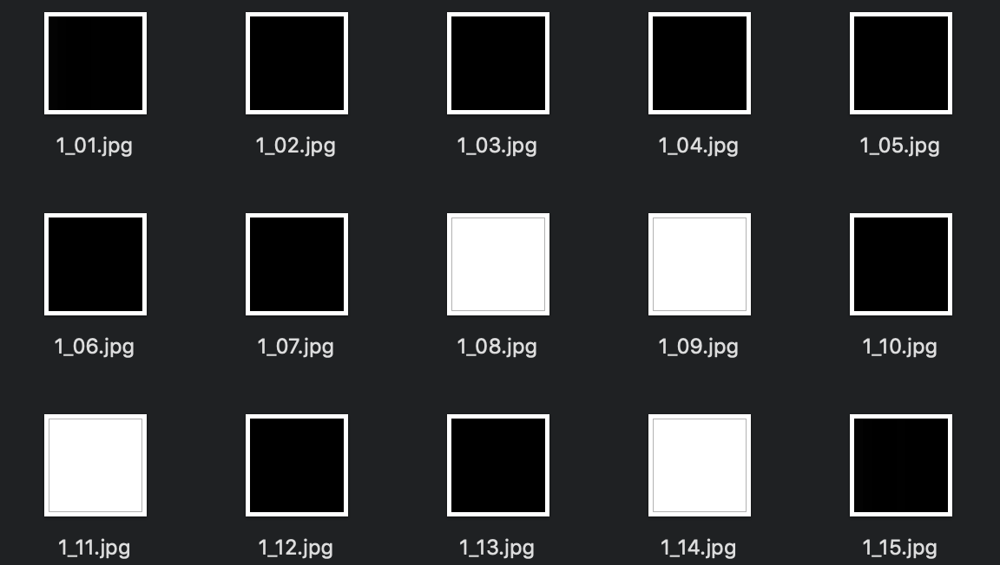

Intro
On the beginning of this month, intigriti held a challenge like CTF on Twitter. This article is my write-up of the challenge!
CHALLENGE: FIND THE FLAG🚩 & WIN🏆! There's a secret flag hidden in this tweet. Can you find it? 🕵️ Check the rules in the replies! 👇#HackWithIntigriti #BugBounty #CTF https://t.co/0PFZNd692W
— intigriti (@intigriti) 2019年1月9日
Write-up

1. Research the image attached the tweet
Embeddeding any files to Image file is a well-known method of steganography. So I researched the image attached to the tweet(attached.jpg) like below.
$ foremost attached.jpg
Then, I got zip file and I got nottheflag.pdf from the zip.
The content of the pdf file is below
aHR0cHM6Ly9nby5pbnRpZ3JpdGkuY29tLzA3YjBmTDI0bGttdmE= Source for this cool technique: https://twitter.com/David3141593/status/1058124224798380032
The pdf indicated a suspicious Base64 string and technical reference of the method for hidding the zip file.
$ echo "aHR0cHM6Ly9nby5pbnRpZ3JpdGkuY29tLzA3YjBmTDI0bGttdmE=" | base64 -D
https://go.intigriti.com/07b0fL24lkmva
I got a URL for next stage!
2. data.zip
I got data.zip from the URL. But this zip file was locked and I didn’t know the password for the zip file… I stuck in this stage
3. Research the tweet
I went back to research the tweet. Then, the 2nd hint was published! So, I try to do like the hint: reply, click, look up.

I clicked the link of image without any thinking and I noticed the URL was linked other account!!!

And I got the password of the data.zip from the header image!!!!!!
password: F1nDBuGz_
4. data.zip returns!
I unzipped the zip file using the password and I got 441 jpg files.

5. 441 jpg files
I noticed immediately that the many files is parts of QR code. That’s because 441 = 21*21, all the images are black or white, and challenges related QR code are often seen in some CTFs. Therefore, I wrote python script to solve it. The script is below
#!/usr/bin/env python
# -*- coding: utf-8 -*-
from PIL import Image
from pyzbar.pyzbar import decode
def main():
src_imgs = []
for i in range(441):
src_imgs.append(Image.open(f'data/1_{str(i+1).zfill(2)}.jpg'))
src_w = src_imgs[0].width
src_h = src_imgs[0].height
dst_img = Image.new('RGB', (src_w*21, src_h*21))
for i in range(441):
idx_x = i % 21
idx_y = int(i / 21)
x = idx_x * src_w
y = idx_y * src_h
dst_img.paste(src_imgs[i], (x,y))
dst_img.save('qr.jpg')
data = decode(dst_img)
print(data[0][0])
if __name__ == '__main__':
main()

And I got a flag!!!!!!!
FLAG:YOUWINTIGRITI